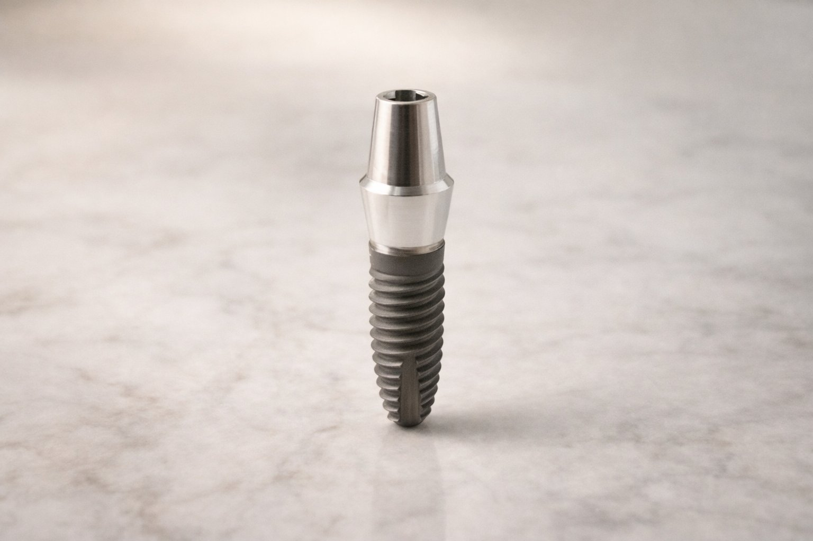

Izgubiti zub ne znači izgubiti osmijeh. Dentalni implantat je najbliže što moderna medicina može ponuditi prirodnom zubu.
Implantat je titanski vijak koji zamjenjuje korijen izgubljenog zuba. Na njega postavljamo krunicu koja izgleda, funkcionira i osjeća se kao pravi zub — jede se normalno, pere normalno.
Svaki dan bez zuba znači postupni gubitak kosti na tom mjestu. Što ranije pristupimo, to je zahvat jednostavniji i rezultat bolji.